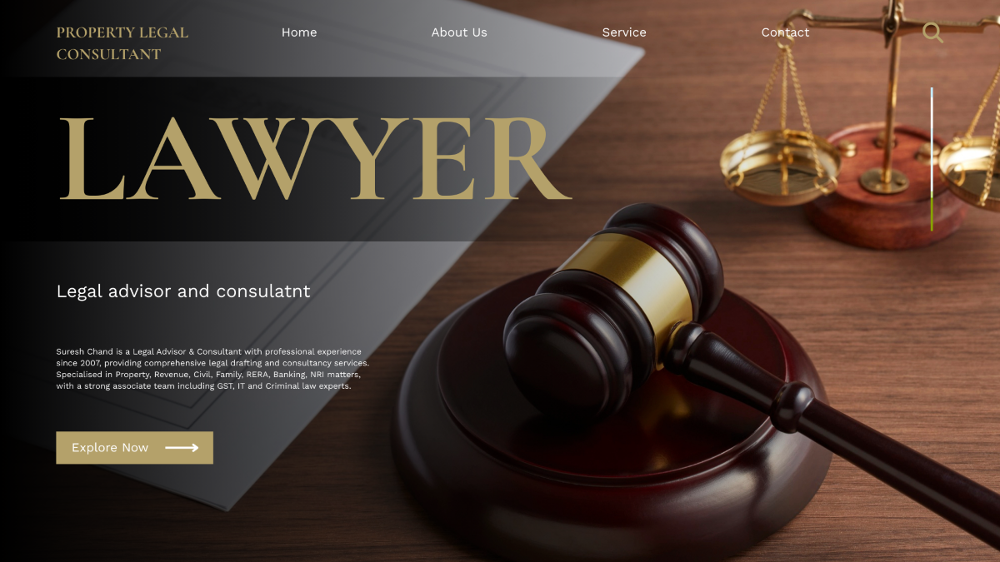

Professional Online Legal Help • Legal Drafting • Civil • Property • RERA Services

We are trusted Online Legal Consultant and Online Legal Advisor providing reliable Online Legal Help in Ghaziabad and Delhi NCR. Our experienced Online Legal Experts offer professional Online Legal Drafting Consultant services including Online Legal Deeds Drafting Services for civil, property, family, RERA and consumer matters. Get accurate documentation support and professional legal expert advice with complete compliance assistance.
A Trust Deed is a legally enforceable document through which a person (Settlor/Author) transfers property or assets to a Trust for a defined purpose. It establishes the legal relationship between the Settlor, Trustees, and Beneficiaries. In practical terms, this document acts as the rulebook of the trust and governs every activity carried out under it. In areas like Ghaziabad and Delhi NCR, Trust Deeds are commonly used for charitable trusts, educational institutions, religious organizations, and family asset protection structures. A properly drafted Trust Deed ensures that the intention of the settlor is clearly defined and legally protected. Without proper drafting, the trust may face operational issues, legal disputes, or even rejection during registration.
A well-drafted Trust Deed must include essential clauses such as the name and objective of the trust, details of trustees and beneficiaries, powers and duties of trustees, and the procedure for managing trust property. It should also specify whether trustees have the authority to sell, lease, or invest trust assets. Clauses related to appointment, resignation, and removal of trustees are extremely important for long-term functioning. In addition, provisions for bank account operations, audit requirements, and financial transparency should be clearly mentioned. Many trusts fail due to vague clauses or missing provisions, which is why professional legal drafting is critical. The deed may also include dispute resolution mechanisms to handle internal conflicts efficiently.
From a practical perspective, a Trust Deed is not just a document but a long-term legal framework. It helps in tax planning, compliance with regulations, and maintaining credibility with donors and authorities. Registration requirements and stamp duty vary depending on the type of trust and state laws. Errors in drafting can lead to rejection by authorities or legal complications later. Therefore, expert legal assistance ensures that the document is accurate, compliant, and future-proof. A strong Trust Deed ultimately protects the interests of beneficiaries and ensures smooth functioning of the trust for years to come.
An Agreement to Sell is a crucial pre-contract document in property transactions that records the mutual understanding between a buyer and a seller. It is executed before the Sale Deed and lays down the foundation of the entire transaction. In practical property dealings across Ghaziabad, Noida, and Delhi NCR, this document plays a key role in safeguarding both parties. It clearly mentions the agreed sale consideration, payment schedule, and time frame for completing the deal. Without a properly drafted agreement, even genuine transactions can lead to disputes or financial losses. This document ensures that both parties are legally bound by the agreed terms.
The Agreement to Sell must include detailed clauses such as advance payment (token amount), penalty in case of default, cancellation terms, and possession conditions. It should also include a complete description of the property along with ownership verification. Legal due diligence is extremely important before signing, as it helps confirm that the seller has a clear and marketable title. Many disputes arise due to incomplete agreements or missing clauses, which is why professional drafting is necessary. The agreement may also include arbitration clauses for resolving disputes without going to court. Including indemnity clauses further protects the buyer from future risks.
From a practical standpoint, this document acts as a security tool for both buyer and seller. It ensures transparency and builds trust between parties. A well-drafted Agreement to Sell minimizes risks, avoids misunderstandings, and ensures smooth progression to the final Sale Deed. Legal experts ensure that all necessary clauses are included and customized based on the transaction. Taking legal advice at this stage can save significant time, money, and stress in the future. It is always better to invest in proper drafting than to face litigation later.
A Sale Deed is the final and most important legal document in a property transaction as it officially transfers ownership from the seller to the buyer. It is executed after all conditions mentioned in the Agreement to Sell have been fulfilled. This document must be registered with the Sub-Registrar office to be legally valid. In Ghaziabad and Delhi NCR, registration laws strictly require payment of stamp duty and registration charges. Without registration, the ownership transfer is not recognized under law, making this document absolutely essential.
The Sale Deed contains critical details such as identity of buyer and seller, full description of the property, transaction value, and confirmation of payment. It also includes possession-related clauses and ensures that the property is free from encumbrances such as loans, disputes, or legal claims. A properly drafted Sale Deed protects the buyer from future litigation and establishes clear ownership rights. It is also required for mutation, resale, and obtaining loans. Any error or missing information in this document can create serious legal complications.
Practically, a Sale Deed acts as permanent proof of ownership and is one of the most important documents a property owner holds. Legal verification before execution is essential to ensure authenticity of title documents. Expert drafting ensures compliance with legal requirements and protects both parties. It is always advisable to execute this document carefully in the presence of witnesses and with proper legal guidance. A well-prepared Sale Deed provides long-term security and peace of mind.
A Gift Deed is a legal document used to transfer ownership of property voluntarily without any monetary consideration. It is commonly used in family arrangements where assets are transferred between relatives. The transfer must be made willingly by the donor without any pressure or coercion. In practical use across Ghaziabad and Delhi NCR, Gift Deeds are often used for estate planning and avoiding inheritance disputes. This document ensures that ownership is transferred legally and smoothly.
The Gift Deed must include complete details of the donor, donee, and the property being transferred. It must be registered to become legally valid, and stamp duty is applicable based on state laws. One important aspect is that a Gift Deed is generally irrevocable once executed. This means the donor cannot easily cancel it later. Therefore, careful drafting and full understanding of terms are essential. It may also include conditions related to possession or usage of the property.
Common mistakes in Gift Deeds include incomplete property description, lack of proper registration, and absence of clear intention. These issues can lead to disputes or legal complications. Professional legal drafting ensures clarity, compliance, and protection of interests. It also helps in understanding tax implications, if any. A properly executed Gift Deed provides legal security and ensures a smooth and dispute-free transfer of property.
A Legal Heir Certificate is an official document that identifies the rightful heirs of a deceased person. It is required for claiming property, bank balances, insurance, and other financial assets. In practical situations, authorities such as banks, government departments, and courts require this certificate before transferring ownership or releasing funds. It ensures that assets are distributed among the correct legal heirs.
The process of obtaining a Legal Heir Certificate involves submitting an application along with required documents such as death certificate, identity proof, and proof of relationship. The application is verified by the concerned authority, and after due verification, the certificate is issued. Any mistake or missing document can delay the process. This document plays a crucial role in avoiding disputes among family members.
From a practical point of view, a Legal Heir Certificate simplifies the process of asset transfer and ensures legal clarity. It is widely accepted as proof in financial and legal matters. Professional assistance can help in preparing accurate documentation and speeding up the process. Ensuring correct details in the certificate is essential to avoid complications later.
Online Legal Drafting Services provide a modern and efficient solution for preparing legal documents. Clients can get agreements, deeds, and notices drafted without visiting a lawyer’s office. This is especially useful in busy regions like Ghaziabad and Delhi NCR where time is a major factor. These services combine convenience with professional accuracy.
Expert lawyers handle drafting and ensure that documents comply with applicable laws. Proper drafting reduces the risk of disputes and ensures enforceability. These services also maintain confidentiality and provide quick turnaround time. Clients can review and request changes easily before finalizing documents.
Practically, online legal services are cost-effective, reliable, and time-saving. They are suitable for both individuals and businesses. Choosing professional drafting services ensures that your documents are legally sound and future-proof. It provides peace of mind and reduces the chances of legal complications.
Complete consultancy for title search report, due diligence, mutation, name transfer, mortgage documentation and compliance services.
Online legal drafting, agreements, notices, divorce documentation, succession matters and financial legal advisory services.
Professional online legal help for RERA complaints, consumer court matters and statutory legal procedures.
Yes, we provide Online Legal Consultant and Online Legal Advisor services in Ghaziabad and Delhi NCR.
We offer Online Legal Drafting Consultant services including deeds drafting, agreements and legal documentation.
Yes, our Online Legal Experts assist in property disputes, title verification and RERA complaints.
You can call us directly on 9958814407 for professional legal consultation.
Mobile: 9958814407
Email: legaladvisor@gmail.com